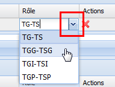

Typage du rôle des relations hiérarchiques ou associatives entre Concepts
ProcédureTyper les relations hiérarchiques ou associatives d'un Concept⚓
RemarqueRemarque⚓
Cette procédure explique à la fois comment typer la relation hiérarchique et la relation associative entre deux Concepts.
AttentionAttention⚓
La relation hiérarchique est toujours typée depuis le Concept enfant via la rubrique Concepts parents.
Cliquez dans la case
Rôlede la ligne duConceptdont vous souhaitez typer la relation hiérarchique ou associative.Un menu déroulant s'affiche.

Sélectionnez le rôle de votre choix.
RéglementaireRôles disponibles⚓
Relations disponibles avec les Concepts parents TG - TS
Relation hiérarchique générale (rôle par défaut)
(Générique / Spécifique)
TGG - TSG
Relation hiérarchique générique
(Classe ou Catégorie / Élément)
Utilisé pour distinguer des relations hiérarchiques génériques des relations hiérarchiques instanciatives ou partitives.
TGI - TSI
Relation hiérarchique d'instance
(Catégorie générale / Spécimen)
TGP - TSP
Relation hiérarchique partitive
(Tout / Partie)
Relations disponibles avec les Concepts associés TA
Terme associé
RemarqueRemarque⚓
La liste des valeurs est paramétrable par l'administrateur de l'application, en fonction des besoins.
Cliquez sur

Enregistrerpour sauvegarder les modifications apportées auConcept.